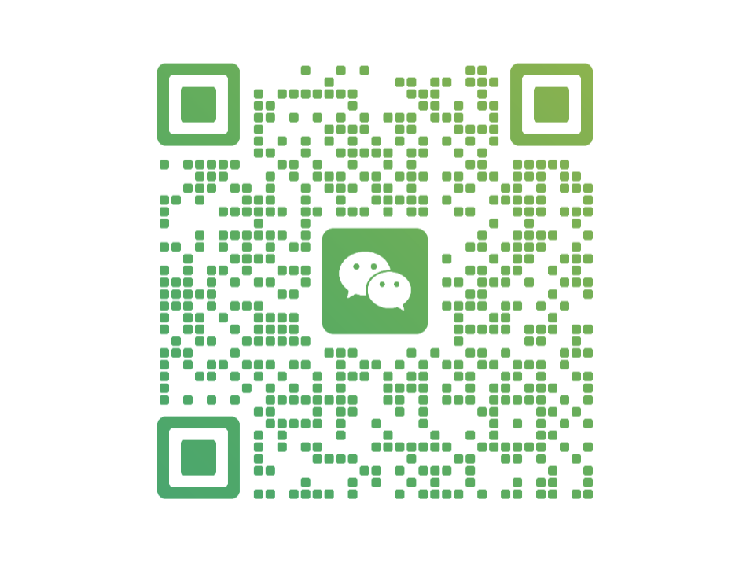
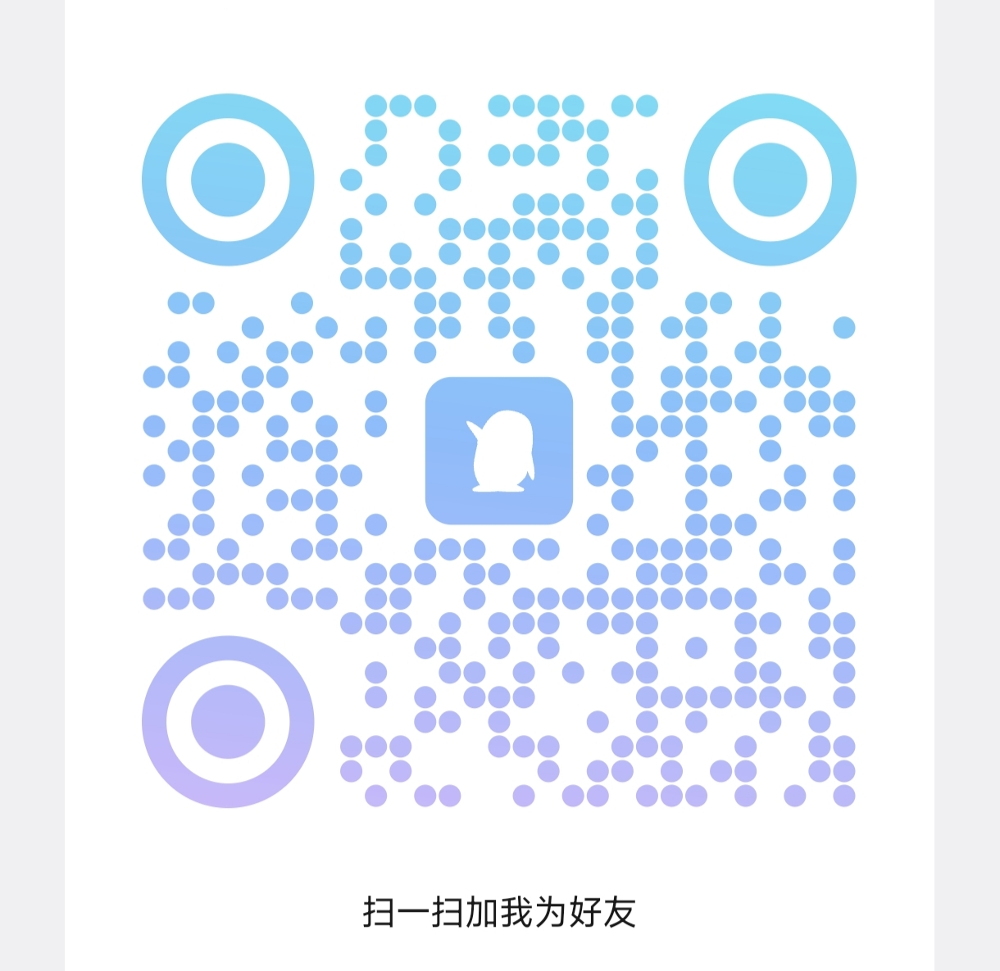

从一枚代币到一条公链，把复杂的 Web3 拆成你听得懂的话。不需要任何基础，跟着五重试炼走一遍，你就懂了。
开启试炼 ➔很多人一上来就被收益率吸引，钱进去了却不知道自己买的是什么。这里反过来——先把三块最基础的铭文认清楚。
一整个 Web3 生态：核心是治理代币 LGNS，配上质押、DAO 治理，还有自建的 Anubis 隐私公链。先把它理解成"一个有自己代币和规则的链上社区"。
生态里的核心代币。你可以持有、质押它来参与生态；它用一套叫 (3,3) 的博弈模型，鼓励大家长期持有、而不是短炒。
把 LGNS 锁进合约、每 6 小时按周期领取代币奖励的过程。收益从哪来、是不是"稳赚"，第二、三重试炼会掰开揉碎讲——先懂原理再动手。

从"听说过"到"能自己判断"。按顺序走，滚动时圣火会沿阶梯注入、逐级点亮符印。总共约 90 分钟，可以分几次看完。
先把名词对上号：起源、Anubis、LGNS 各是什么、什么关系。
搞懂这枚代币靠什么运转，为什么大家都在讲"质押"。
从准备钱包到完成第一次质押、领取收益，走完整个流程。
知道 Awake DAO 是什么，一个提案怎么从发起走到执行。
学会自己上链核对数据、识别钓鱼，具备最基础的自我保护能力。
新手最容易卡住的几个问题。点开石板看答案——这里只讲清楚"是什么、怎么判断"，不替你做决定。
Web3 的好处是一切都能自己上链核对。这些法器帮你把"别人说的"变成"自己查到的"。
视频课、PDF 课件、图文文章、公众号原文，都收在这里。点分类筛选，点卡片打开——视频直接播、课件翻页看、文章弹出读。

扫码加我，进社区、问问题、获取一手信息。新手上路别一个人瞎摸。

